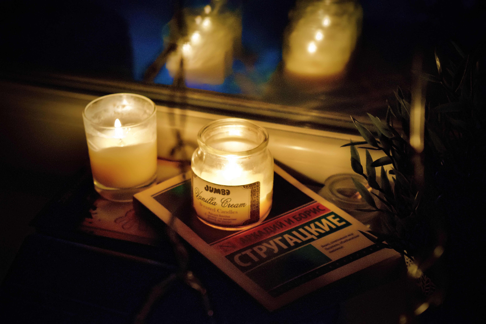

Фотография начинается не с заказчика. Фотография начинается не со зрителя. Она начинается с тебя. Потом твой кадр попадая в поле зрения человека вызывает у него эмоции. Затрагивает его воспоминания. Буквально лезет в его голову.
Многие из нас начинают фотографировать в качестве хобби. У некоторых это переходит в бизнес. Если это бизнес, то его поддерживают заказчики. И у тебя не остается времени на себя. Не остается времени снимать то, что ты любишь. Но есть замечательные люди – энтузиасты. Они снимают из-за любви к своему делу и объектам. Но со временем приходят скука, посредственность, социальные сети…
Думаю, это правда. Ведь если фотограф и правда любит своё дело, то он будет вкладывать всего себя в каждый кадр, даже в неудачном снимке будет видна капелька его души.
Кстати, про социальные сети. Подумайте вот над каким вопросом. Точнее нет, над двумя. Я сам порой не могу на них ответить. Что бы ты сегодня сфотографировал, не учитывая сколько лайков наберет эта фотография? Чтобы ты снял, даже если бы пришлось снимать в тяжелых условиях? На первый я могу ответить довольно легко, так как я не гонюсь за дайками и какой-то популярностью, пусть у меня будет 2 лайка, но зато люди, которые их поставили, действительно прониклись моей идеей. А вот со вторым сложнее…
Скорее всего ответом на этот вопрос будет – то, что я люблю.
Сейчас попробую предположить. Допустим у меня было две съёмки в один день. Одна под заказ, а другая это просто прогулка по дворам. Возвращаясь с первой съёмки у меня, была только усталость и желание поскорей разделаться с этими кадрами и забыть про них. А возвращаясь со второй прогулки, у меня был азарт, желания поскорей увидеть на экране моё не побоюсь этого слова искусство. Моё искусство! Вот и ответ – если ты чувствуешь это желание, этот азарт после съёмки то вы точно занимаетесь тем, что вам по душе.
Теперь, пожалуй, дам пару советам своим коллегам, таким же новичкам, которые пытаются выразить в фотографии свои эмоции. И первый совет – отдыхай. Все мы люди, все мы живые и все мы устаем. Не нужно заставлять себя снимать что-то через силу – теряется эта волшебная связь межу кадром и душой создателя. Опять же негативно выскажусь о социальных сетях. Порой они заставляют тебя встать и пойти что-то снимать, даже если ты не хочешь. Не поддавайся этому, главное – душа.
И второй. Пойду немного из далека. Что ты чувствуешь, когда смотришь свои фотографии из детства? Ты смеешься, плачешь и, возможно, думаешь: «где я свернул не туда?». Так происходит, например и у художников. Сравни начальные работы великих художников и их поздние творения. Виден рост, прогресс. Старайся так же рассматривать свои старые работы. Заглядывайся на свои прошлые кадры. Возможно, они пробудят в тебе теплые воспоминания, а может и покажут твои ошибки. Наблюдение за эволюцией твоих фотографий подтверждает нашу потребность в самосовершенствовании и развитии.
P.S. эта статья основана на моём переводе англоязычной статьи. Надеюсь моя работа не прошла даром и хотя бы подарила вам немного приятных эмоций.